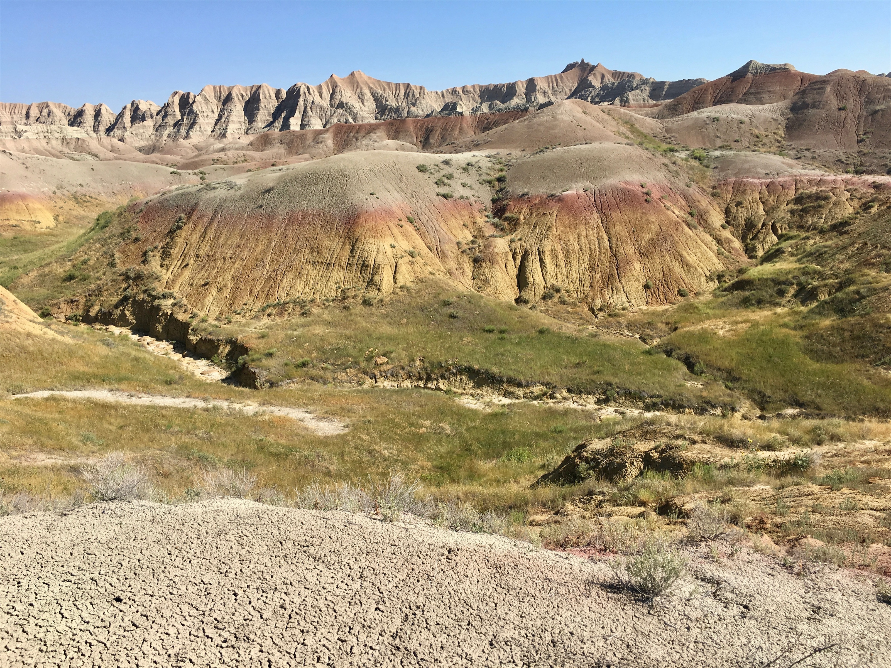

Monday, Aug 6, 2018, 2:53 PM MDT
Ben Reifel Visitor Center, Interior, SD, United States
82°F Scattered Storms
82°F Scattered Storms
![]()
8/5 Wind Cave Visitor Center, SD -> Hot Springs, SD 13 mi, 4 hr
8/6 Hot Springs, SD -> Ben Reifel Visitor Center/Cedar Pass Lodge, SD 147 mi, 3.5 hr
8/7 Cedar Pass Lodge, SD -> Pinnacles Entrance, SD 28 mi, 1.5 hr
Trip Total: 11,165 mi
We made our way north back through the Wind Cave Park toward Rapid City, seeing many bison, and then, with countless motorcycles, southeast to the Badlands. It is very odd to go from rolling prairie to colored banded rock, and this made us think we were blown back to the West. While in the visitor center, a bad thunderstorm with some peas-size hail appeared, which made it an even more popular stop for the Sturgis crowd. We spent the night in the park in a duplex cabin at the very nice Cedar Pass Lodge.
The next morning, we drove the shorter east route, stopping to do the Door hike (0.75 mi) and the Window hike (0.25 mi). On our road trip to Mt. Rushmore a few decades ago, we think we explored this area with the boys. We then drove through the west route to I-90 and past the famous town of Wall (skipping Wall Drug, despite the endless billboards), while enjoying the spectacular, other worldly, scenery.


